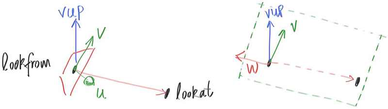
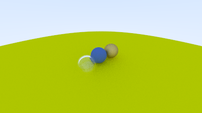

Positioning and Orienting the Camera
To get an arbitrary viewpoint, let’s first name the points we care about. We’ll call the position where we place the camera lookfrom, and the point we look at lookat. (Later, if you want, you could define a direction to look in instead of a point to look at.)
We also need a way to specify the roll, or sideways tilt, of the camera: the rotation around the lookat-lookfrom axis. Another way to think about it is that even if you keep lookfrom and lookat constant, you can still rotate your head around your nose. What we need is a way to specify an “up” vector for the camera.

Figure 19: Camera view direction
We can specify any up vector we want, as long as it's not parallel to the view direction. Project this up vector onto the plane orthogonal to the view direction to get a camera-relative up vector. I use the common convention of naming this the “view up” (vup) vector. After a few cross products and vector normalizations, we now have a complete orthonormal basis \( (u, v, w) \) to describe our camera’s orientation. \( u \) will be the unit vector pointing to camera right, \( v \) is the unit vector pointing to camera up, \( w \) is the unit vector pointing opposite the view direction (since we use right-hand coordinates), and the camera center is at the origin.

Figure 20: Camera view up direction
Like before, when our fixed camera faced \( -Z \), our arbitrary view camera faces \( -w \). Keep in mind that we can — but we don’t have to — use world up \( (0, 1, 0) \) to specify vup. This is convenient and will naturally keep your camera horizontally level until you decide to experiment with crazy camera angles.
diff --git a/src/camera.rs b/src/camera.rs
index 8e256aa..44da965 100644
--- a/src/camera.rs
+++ b/src/camera.rs
@@ -1,179 +1,220 @@
use crate::{hittable::Hittable, prelude::*};
pub struct Camera {
/// Ratio of image width over height
pub aspect_ratio: f64,
/// Rendered image width in pixel count
pub image_width: i32,
// Count of random samples for each pixel
pub samples_per_pixel: i32,
// Maximum number of ray bounces into scene
pub max_depth: i32,
// Vertical view angle (field of view)
pub vfov: f64,
+ /// Point camera is looking from
+ pub lookfrom: Point3,
+ /// Point camera is looking at
+ pub lookat: Point3,
+ /// Camera-relative "up" direction
+ pub vup: Vec3,
/// Rendered image height
image_height: i32,
// Color scale factor for a sum of pixel samples
pixel_samples_scale: f64,
/// Camera center
center: Point3,
/// Location of pixel 0, 0
pixel00_loc: Point3,
/// Offset to pixel to the right
pixel_delta_u: Vec3,
/// Offset to pixel below
pixel_delta_v: Vec3,
+ /// Camera frame basis vector - right
+ u: Vec3,
+ /// Camera frame basis vector - up
+ v: Vec3,
+ /// Camera frame basis vector - opposite view direction
+ w: Vec3,
}
impl Default for Camera {
fn default() -> Self {
Self {
aspect_ratio: 1.0,
image_width: 100,
samples_per_pixel: 10,
max_depth: 10,
vfov: 90.0,
+ lookfrom: Point3::new(0.0, 0.0, 0.0),
+ lookat: Point3::new(0.0, 0.0, -1.0),
+ vup: Point3::new(0.0, 1.0, 0.0),
image_height: Default::default(),
pixel_samples_scale: Default::default(),
center: Default::default(),
pixel00_loc: Default::default(),
pixel_delta_u: Default::default(),
pixel_delta_v: Default::default(),
+ u: Default::default(),
+ v: Default::default(),
+ w: Default::default(),
}
}
}
impl Camera {
pub fn with_aspect_ratio(mut self, aspect_ratio: f64) -> Self {
self.aspect_ratio = aspect_ratio;
self
}
pub fn with_image_width(mut self, image_width: i32) -> Self {
self.image_width = image_width;
self
}
pub fn with_samples_per_pixel(mut self, samples_per_pixel: i32) -> Self {
self.samples_per_pixel = samples_per_pixel;
self
}
pub fn with_max_depth(mut self, max_depth: i32) -> Self {
self.max_depth = max_depth;
self
}
pub fn with_vfov(mut self, vfov: f64) -> Self {
self.vfov = vfov;
self
}
+ pub fn with_lookfrom(mut self, lookfrom: Point3) -> Self {
+ self.lookfrom = lookfrom;
+
+ self
+ }
+
+ pub fn with_lookat(mut self, lookat: Point3) -> Self {
+ self.lookat = lookat;
+
+ self
+ }
+
+ pub fn with_vup(mut self, vup: Vec3) -> Self {
+ self.vup = vup;
+
+ self
+ }
+
pub fn render(&mut self, world: &impl Hittable) -> std::io::Result<()> {
self.initialize();
println!("P3");
println!("{} {}", self.image_width, self.image_height);
println!("255");
for j in 0..self.image_height {
info!("Scanlines remaining: {}", self.image_height - j);
for i in 0..self.image_width {
let mut pixel_color = Color::new(0.0, 0.0, 0.0);
for _sample in 0..self.samples_per_pixel {
let r = self.get_ray(i, j);
pixel_color += Self::ray_color(r, self.max_depth, world);
}
write_color(std::io::stdout(), self.pixel_samples_scale * pixel_color)?;
}
}
info!("Done.");
Ok(())
}
fn initialize(&mut self) {
self.image_height = {
let image_height = (self.image_width as f64 / self.aspect_ratio) as i32;
if image_height < 1 { 1 } else { image_height }
};
self.pixel_samples_scale = 1.0 / self.samples_per_pixel as f64;
- self.center = Point3::new(0.0, 0.0, 0.0);
+ self.center = self.lookfrom;
// Determine viewport dimensions.
- let focal_length = 1.0;
+ let focal_length = (self.lookfrom - self.lookat).length();
let theta = self.vfov.to_radians();
let h = f64::tan(theta / 2.0);
let viewport_height = 2.0 * h * focal_length;
let viewport_width =
viewport_height * (self.image_width as f64) / (self.image_height as f64);
+ // Calculate the u,v,w unit basis vectors for the camera coordinate frame.
+ self.w = unit_vector(self.lookfrom - self.lookat);
+ self.u = unit_vector(cross(self.vup, self.w));
+ self.v = cross(self.w, self.u);
+
// Calculate the vectors across the horizontal and down the vertical viewport edges.
- let viewport_u = Vec3::new(viewport_width, 0.0, 0.0);
- let viewport_v = Vec3::new(0.0, -viewport_height, 0.0);
+ let viewport_u = viewport_width * self.u; // Vector across viewport horizontal edge
+ let viewport_v = viewport_height * -self.v; // Vector down viewport vertical edge
// Calculate the horizontal and vertical delta vectors from pixel to pixel.
self.pixel_delta_u = viewport_u / self.image_width as f64;
self.pixel_delta_v = viewport_v / self.image_height as f64;
// Calculate the location of the upper left pixel.
let viewport_upper_left =
- self.center - Vec3::new(0.0, 0.0, focal_length) - viewport_u / 2.0 - viewport_v / 2.0;
+ self.center - (focal_length * self.w) - viewport_u / 2.0 - viewport_v / 2.0;
self.pixel00_loc = viewport_upper_left + 0.5 * (self.pixel_delta_u + self.pixel_delta_v);
}
fn get_ray(&self, i: i32, j: i32) -> Ray {
// Construct a camera ray originating from the origin and directed at randomly sampled
// point around the pixel location i, j.
let offset = Self::sample_square();
let pixel_sample = self.pixel00_loc
+ ((i as f64 + offset.x()) * self.pixel_delta_u)
+ ((j as f64 + offset.y()) * self.pixel_delta_v);
let ray_origin = self.center;
let ray_direction = pixel_sample - ray_origin;
Ray::new(ray_origin, ray_direction)
}
fn sample_square() -> Vec3 {
// Returns the vector to a random point in the [-.5,-.5]-[+.5,+.5] unit square.
Vec3::new(
rand::random::<f64>() - 0.5,
rand::random::<f64>() - 0.5,
0.0,
)
}
fn _sample_disk(radius: f64) -> Vec3 {
// Returns a random point in the unit (radius 0.5) disk centered at the origin.
radius * random_in_unit_disk()
}
fn ray_color(r: Ray, depth: i32, world: &impl Hittable) -> Color {
// If we've exceeded the ray bounce limit, no more light is gathered.
if depth <= 0 {
return Color::new(0.0, 0.0, 0.0);
}
if let Some(rec) = world.hit(r, Interval::new(0.001, INFINITY)) {
if let Some((scattered, attenuation)) = rec.mat.scatter(r, rec.clone()) {
return attenuation * Self::ray_color(scattered, depth - 1, world);
}
return Color::new(0.0, 0.0, 0.0);
}
let unit_direction = unit_vector(r.direction());
let a = 0.5 * (unit_direction.y() + 1.0);
(1.0 - a) * Color::new(1.0, 1.0, 1.0) + a * Color::new(0.5, 0.7, 1.0)
}
}Listing 82: [camera.rs] Positionable and orientable camera
We'll change back to the prior scene, and use the new viewpoint:
diff --git a/src/main.rs b/src/main.rs
index e906c8c..2e30baf 100644
--- a/src/main.rs
+++ b/src/main.rs
@@ -1,37 +1,56 @@
use code::{
camera::Camera,
hittable_list::HittableList,
material::{Dielectric, Lambertian, Metal},
prelude::*,
sphere::Sphere,
};
fn main() -> std::io::Result<()> {
let mut world = HittableList::new();
- let r = f64::cos(PI / 4.0);
-
- let material_left = Rc::new(Lambertian::new(Color::new(0.0, 0.0, 1.0)));
- let material_right = Rc::new(Lambertian::new(Color::new(1.0, 0.0, 0.0)));
+ let material_ground = Rc::new(Lambertian::new(Color::new(0.8, 0.8, 0.0)));
+ let material_center = Rc::new(Lambertian::new(Color::new(0.1, 0.2, 0.5)));
+ let material_left = Rc::new(Dielectric::new(1.5));
+ let material_bubble = Rc::new(Dielectric::new(1.0 / 1.5));
+ let material_right = Rc::new(Metal::new(Color::new(0.8, 0.6, 0.2), 1.0));
world.add(Rc::new(Sphere::new(
- Point3::new(-r, 0.0, -1.0),
- r,
+ Point3::new(0.0, -100.5, -1.0),
+ 100.0,
+ material_ground,
+ )));
+ world.add(Rc::new(Sphere::new(
+ Point3::new(0.0, 0.0, -1.2),
+ 0.5,
+ material_center,
+ )));
+ world.add(Rc::new(Sphere::new(
+ Point3::new(-1.0, 0.0, -1.0),
+ 0.5,
material_left,
)));
world.add(Rc::new(Sphere::new(
- Point3::new(r, 0.0, -1.0),
- r,
+ Point3::new(-1.0, 0.0, -1.0),
+ 0.4,
+ material_bubble,
+ )));
+ world.add(Rc::new(Sphere::new(
+ Point3::new(1.0, 0.0, -1.0),
+ 0.5,
material_right,
)));
env_logger::init();
Camera::default()
.with_aspect_ratio(16.0 / 9.0)
.with_image_width(400)
.with_samples_per_pixel(100)
.with_max_depth(50)
.with_vfov(90.0)
+ .with_lookfrom(Point3::new(-2.0, 2.0, 1.0))
+ .with_lookat(Point3::new(0.0, 0.0, -1.0))
+ .with_vup(Point3::new(0.0, 1.0, 0.0))
.render(&world)
}Listing 83: [main.rs] Scene with alternate viewpoint
to get:
Image 20: A distant view
And we can change field of view:
diff --git a/src/main.rs b/src/main.rs
index 2e30baf..f7deb5e 100644
--- a/src/main.rs
+++ b/src/main.rs
@@ -1,56 +1,56 @@
use code::{
camera::Camera,
hittable_list::HittableList,
material::{Dielectric, Lambertian, Metal},
prelude::*,
sphere::Sphere,
};
fn main() -> std::io::Result<()> {
let mut world = HittableList::new();
let material_ground = Rc::new(Lambertian::new(Color::new(0.8, 0.8, 0.0)));
let material_center = Rc::new(Lambertian::new(Color::new(0.1, 0.2, 0.5)));
let material_left = Rc::new(Dielectric::new(1.5));
let material_bubble = Rc::new(Dielectric::new(1.0 / 1.5));
let material_right = Rc::new(Metal::new(Color::new(0.8, 0.6, 0.2), 1.0));
world.add(Rc::new(Sphere::new(
Point3::new(0.0, -100.5, -1.0),
100.0,
material_ground,
)));
world.add(Rc::new(Sphere::new(
Point3::new(0.0, 0.0, -1.2),
0.5,
material_center,
)));
world.add(Rc::new(Sphere::new(
Point3::new(-1.0, 0.0, -1.0),
0.5,
material_left,
)));
world.add(Rc::new(Sphere::new(
Point3::new(-1.0, 0.0, -1.0),
0.4,
material_bubble,
)));
world.add(Rc::new(Sphere::new(
Point3::new(1.0, 0.0, -1.0),
0.5,
material_right,
)));
env_logger::init();
Camera::default()
.with_aspect_ratio(16.0 / 9.0)
.with_image_width(400)
.with_samples_per_pixel(100)
.with_max_depth(50)
- .with_vfov(90.0)
+ .with_vfov(20.0)
.with_lookfrom(Point3::new(-2.0, 2.0, 1.0))
.with_lookat(Point3::new(0.0, 0.0, -1.0))
.with_vup(Point3::new(0.0, 1.0, 0.0))
.render(&world)
}Listing 84: [main.rs] Change field of view
to get:

Image 21: Zooming in